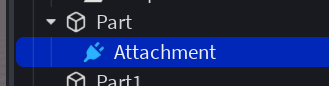
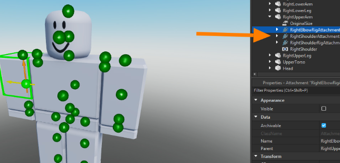
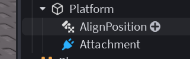
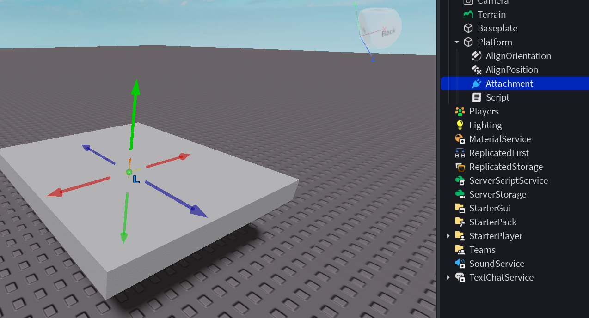
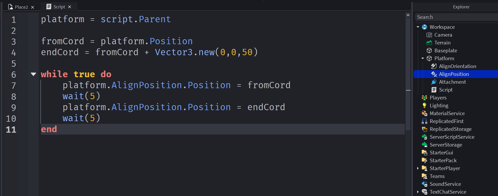

Создание игр в Roblox Studio
Attachment. Что за зверь?
Знакомство с привязками
Attachment обозначает специальную точку-присоединение, используемую для задания конкретной области объекта, к которой могут крепиться другие элементы, включая оружие, инструменты, эффекты частиц, звуковые устройства и многое другое.
Зачем нужны Attachments?
Attachments играют ключевую роль в создании интерактивных и визуально привлекательных игровых сцен. Они позволяют разработчикам задать точные места, откуда происходят звуки, анимация, свет, выброс частиц и размещение аксессуаров на игроках или NPC.
Примеры использования Attachments:
- Размещение оружия (Меч, лук, пистолет должен быть привязан к руке)
- Выбросы частиц (Точка выброса)
- Звуковое сопровождение (Точечные локации с определенным звуком)
- Анимации освещения (Точка начала луча)
- Специальные декорации (На теле персонажа)
- И в других специальных задачах (например, крепления персонажа на подвижной платформе)
Как работают Attachments?
- Аттачмент добавляется в объект (BasePart, персонаж, инструмент и т.п.).
- Затем можно создавать механизмы, ссылающиеся на этот аттечмент, например, звуковое устройство, источник частиц или индикатор.
- Вы можете назначить аттечменты через интерфейс редактора Roblox Studio или программно через Lua-коды.
- *Точку привязки можно двигать по объекту при помощи свойств Properties
Познакомимся ещё с двумя новыми для нас специальными объектами!
AlignPosition
AlignPosition — класс в системе Roblox, который применяет силы для перемещения одной части к целевой позиции. Это инструмент для управления движением частей, который работает с движком физики Roblox (гравитация, столкновения и т. д.).
Свойства:
- Attachment0 — прикрепление на движущейся части.
- Attachment1 — прикрепление на цели (где часть должна двигаться).
- Position — если не используется Attachment1, можно напрямую установить цель в виде вектора.
- RigidityEnabled — делает движение жёстким и точным.
- MaxForce — максимальная сила, которую можно использовать для движения.
- Responsiveness — как быстро класс реагирует на изменения в цели.
Некоторые ограничения:
- Если часть закреплена, AlignPosition не будет работать, потому что физика не может её переместить.
- Без прикреплений (Attachments) класс не может работать правильно.
AlignOrientation
AlignOrientation — это компонент в Roblox Studio, предназначенный для выравнивания ориентации одной части относительно другой. Его основная задача — обеспечить, чтобы две части были направлены одинаково, сохраняя заданное угловое положение.
- Используется для поддержания угла наклона и поворота двух объектов, чаще всего для создания эффекта синхронного движения, фиксации ориентации или плавного перехода между двумя положениями.
- Часто применяют совместно с другим компонентом — AlignPosition, чтобы одновременно выровнять как ориентацию, так и положение объектов.
Отличия от AlignPosition:
- AlignPosition отвечает исключительно за поддержание одинакового положения (местоположение в пространстве) двух объектов.
- AlignOrientation, напротив, занимается сохранением угла и направления двух объектов.
Вместе оба компонента создают мощный инструмент для координации объектов в сложной среде.
Практика. Создаем движущуюся платформу!
Создаем платформу, добавляем на неё специальные объекты
Объекты настраиваем:
- Меняем mode у AlignOrientation и AlignPosition на OneAttachment
- Увеличиваем мощность AlignOrientation.MaxForce до 500К
- Выполяем привязки к нашему Attachment
Программируем небольшой скрипт. Сдвиг выполняем с помощью AlignPosition - так он будет плавным, что даст возможность нам запрыгнуть на платформу!
Пробуем!
Домашкаа 🤖
Выполнить задания от преподавателя